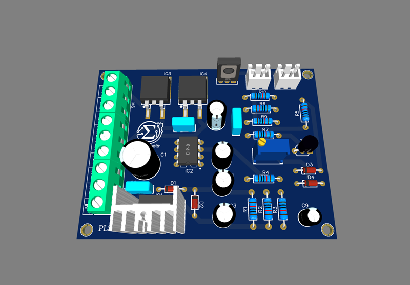

Moduli
PLS – Power Logic Supply
Generazione delle tensioni di servizio (±15V, +12V, +5V).
Raffreddamento proporzionale alla temperatura (NTC + ventola).
PLC – Power Logic Control

Gestione soglie di corrente e potenza.
Controllo corrente tramite operazionale differenziale.
Distacco carico con intervento a relè
LED di segnalazione limite raggiunto
PLM – Power Logic Main

Regolazione di tensione con tre coppie di LM317/LM337 in cascata.
Erogazione di correnti elevate grazie ai suoi Darlington.
Sistema di alimentazione duale da ±1,5V a ±60V (fino a 120V in serie).